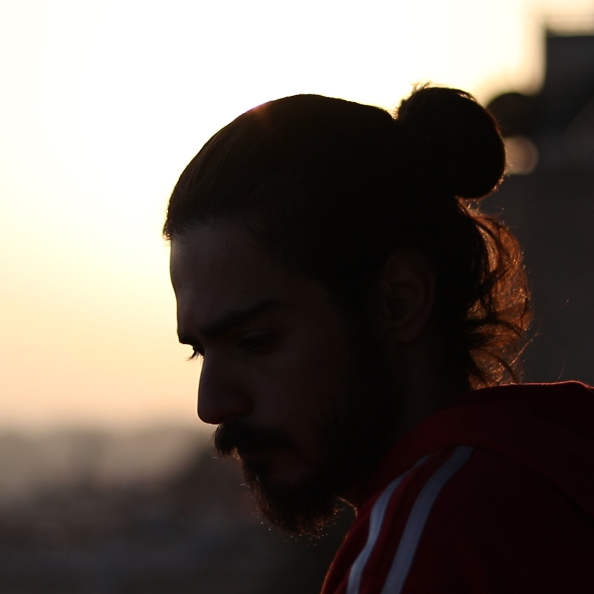
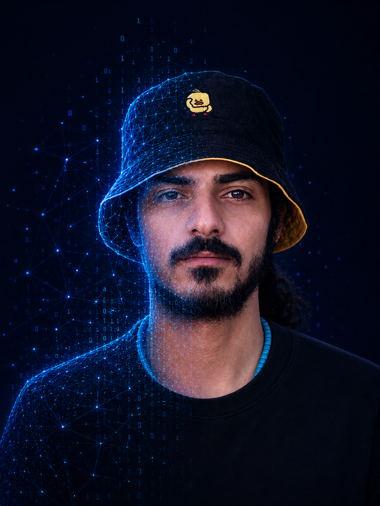

01 — Technology × Cinema × Culture
Alaa
Al Samman
AI Engineer × Film Director × Cultural Entrepreneur
I build intelligent systems, tell human stories through images, and create initiatives where technology, art, and community meet.
Based between
Damascus and Latakia,
Syria
● Available for meaningful collaborations.
02 About

One practice.
Three dimensions.
I am an AI engineer, film director, documentary photographer, video editor, and cultural entrepreneur based between Damascus and Latakia, Syria.
My work moves across intelligent systems, visual storytelling, and community-driven cultural initiatives. With a background in artificial intelligence and a practice rooted in cinema and documentary work, I develop projects that connect technology with human experience.
03 Contact
Let’s create
something
meaningful.
Follow @alsammanx